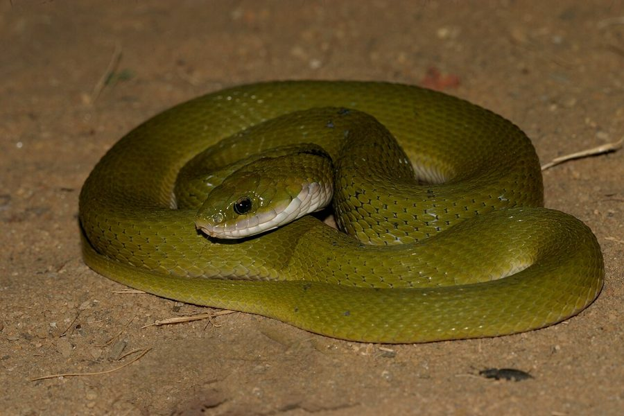

ग्रीन कीलबैकGreen Keelback
Rhabdophis plumbicolor · Colubridae · REP-0028

- Scientific name वैज्ञानिक नाम
- Rhabdophis plumbicolor (Cantor, 1839)
- Family कुल
- Colubridae
- Hindi हिंदी
- ग्रीन कीलबैक
- Local names स्थानीय नाम
- green keelback, keelback, hara saamp, green snake
- Status here यहाँ की स्थिति
- native
- Movement आवागमन
- Resident, here all year
- IUCN IUCN
- LC
- Review समीक्षा
- audited and independently read
When to look कब देखें
Expected mainly in March, April, May, June, July, August, September, October, November. मुख्यतः मार्च, अप्रैल, मई, जून, जुलाई, अगस्त, सितंबर, अक्टूबर, नवंबर में अपेक्षित।
Tell it apart from इनसे अलग पहचानें
ग्रीन कीलबैक / Green Keelback
Rhabdophis plumbicolor (Cantor, 1839) — Colubridae
ग्रीन कीलबैक — बस्ती की नदियों, तालाबों और धान के खेतों के पास साल भर (गर्म महीनों में अधिक) मिलने वाला एक सुंदर, पूरी तरह विषरहित सांप। इसका शरीर चमकदार हरा या नीले-हरे रंग का होता है, पीठ पर उभरी हुई पंक्तियां (keels) होती हैं, जिससे इसे 'keelback' नाम मिला। यह सांप पानी में और उसके पास रहता है, मछलियों और मेढकों का शिकार करता है। इसकी पूँछ पार्श्वतः (side) दबी हुई होती है, जो इसे तैरने में मदद करती है। यह सांप आमतौर पर शांतिपूर्ण होता है, लेकिन पकड़े जाने पर हिंसक रूप से बचाव करता है। यह एक बहुत ही महत्वपूर्ण जलीय शिकारी है।
Quick Identification त्वरित पहचान
| Feature | Description |
|---|---|
| Coloration | Bright green or blue-green; sometimes with darker markings |
| Body | Moderately stout, keeled scales giving a rough texture |
| Keels | Prominent dorsal keels (ridges) on scales; distinctive tactile feature |
| Tail | Laterally compressed (flattened side-to-side); aids in swimming |
| Length | 70–120 cm; moderate-sized water snake |
| Head | Distinct; slightly elongated with pointed snout |
| Eyes | Moderate-sized; positioned forward for better vision above water |
| Behaviour | Aquatic; semi-aquatic; found near water; docile until threatened |
Field tip: A bright green or blue-green snake with a rough, keeled surface, found near water (rivers, ponds, rice fields). The laterally compressed tail and aquatic habitat are distinctive. Completely harmless but will bite if provoked.
हिंदी — कैसे पहचानें:
चमकदार हरा या नीला-हरा रंग।
पानी के पास रहता है, अच्छी तैराक।
पीठ पर उभरी हुई लाइनें (keels)।
पूरी तरह हानिरहित।
Morphology आकारिकी
Biometrics:
| Measurement | Range |
|---|---|
| Total length | 700–1200 mm |
| Tail length | 200–350 mm |
| Weight | 200–500 g |
Body structure: Moderately robust, slightly compressed laterally. Head slightly distinct from neck; snout pointed and slightly flattened, adapted for aquatic life. The body tapers gradually to the tail, which is notably compressed side-to-side.
Coloration: Predominantly bright green or blue-green, one of the most distinctive features. Some specimens may show darker markings, bands, or spots. Ventral (belly) surface typically pale green to yellowish-green or pale cream.
Scales: The dorsal scales are distinctly keeled (ridged), giving the body a rough, bumpy texture. This is the key identification feature. Scales arranged in 17–21 rows at midbody.
Tail: Laterally compressed and flattened, particularly toward the tip. This adaptation aids in swimming and is more developed than in most terrestrial snakes.
Dentition: Aglyphous (lacks fangs). Teeth small, slightly backward-curved.
Eyes: Moderate-sized, with pupils that can be oval or round; positioned somewhat forward on the head, providing better binocular vision for spotting underwater prey.
Behaviour & Ecology व्यवहार और पारिस्थितिकी
Semi-aquatic specialist: The Green Keelback is equally at home in water and on land near water. It swims with lateral undulations, using its compressed tail as a rudder.
Aquatic predator: Hunts fish and frogs by stalking in shallow water or under water vegetation. It can remain submerged for extended periods and has acute vision for spotting prey underwater.
Docile but defensive: Generally placid and non-aggressive unless cornered. When threatened, it may hiss and bite repeatedly, though its bite is harmless to humans (no venom).
Habitat preference: Found in clean, flowing water (rivers, streams) and also in static water bodies (ponds, tanks, rice paddies). Requires water free of heavy pollution.
Activity pattern: Most active during warm months (March–November); sluggish or dormant during cold months (December–February). Diurnal and sometimes crepuscular.
Life Cycle / Phenology जीवन चक्र
| Stage / season | Event |
|---|---|
| December–February | Dormant or sluggish; minimal activity; sheltered under water or in banks |
| March–April | Emergence from dormancy; activity increases; breeding season begins |
| April–June | Mating; females search for water-side nesting sites |
| June–August | Egg-laying; females lay clutches of 8–15 elongated eggs in soil near water |
| August–September | Eggs incubate in warm, humid conditions |
| September–October | Hatchlings emerge; juveniles begin independent hunting |
| October–November | Continued growth and feeding |
| November–December | Activity declines; preparation for dormancy |
Host Plants or Prey आहार
| Prey Type | Examples |
|---|---|
| Fish | Small cyprinids, carps, murrels, catfish |
| Amphibians | Frogs, tadpoles |
| Aquatic invertebrates | Large insects, crustaceans (occasionally) |
हिंदी: मछलियों और मेढकों का शिकारी। जलीय कीटों को भी खाता है।
Predators / Natural Enemies शत्रु
- Avian predators: Fishing eagles, cormorants, herons, occasionally serpent eagles
- Reptilian predators: Monitor lizards, larger snakes, crocodiles (in rivers)
- Mammalian predators: Otters, jackals, occasionally domestic dogs
- Parasites: Water mites, leeches, intestinal helminths
हिंदी: बाज़, नदी के पक्षी, मगरमच्छ इसका शिकार करते हैं।
Agricultural / Human Relevance कृषि प्रासंगिकता
Ecological value: Green Keelbacks provide beneficial pest control by consuming fish and frogs that might damage crops (though their direct crop impact is minimal). They are important components of wetland food webs.
Protected status: Protected under the Wildlife (Protection) Act, 1972 (Schedule IV). Killing or capturing is prohibited.
Water quality indicator: The presence of Green Keelbacks indicates relatively clean water. Their absence may signal water pollution or habitat degradation.
Fish predation: In some aquaculture or fish farming contexts, they may consume young fish, but this is generally minimal.
Expected Locally स्थानीय रूप से अपेक्षित
Not a field record. Written from published accounts for eastern Uttar Pradesh. No confirmed local sighting yet — if you have seen it, that is what the atlas needs.
अभी तक स्थानीय पुष्टि नहीं। यह विवरण प्रकाशित स्रोतों से है, किसी अवलोकन से नहीं।
This species is NOT a field record. The distribution below is based on published sources describing where Green Keelbacks should be looked for in eastern Uttar Pradesh.
यह स्थानीय अवलोकन नहीं है। प्रकाशित स्रोतों पर आधारित।
Green Keelbacks are expected in and around water bodies throughout Basti and Ayodhya districts, including rivers, streams, ponds, tanks, canals, and rice fields. They are most common during the monsoon and post-monsoon when water levels are high and prey is abundant. Look for them basking on water-side vegetation or crossing roadways near water. A first record should include location (specific water body), time, and habitat details. Submit through the atlas About page.
Distribution वितरण
Global range: South and Southeast Asia; found from Pakistan and India through Thailand to Myanmar and Vietnam.
In India: Distributed throughout the subcontinent, particularly in regions with good water systems.
In Uttar Pradesh: Widespread in river systems and water bodies, particularly common in the eastern plains.
In Basti district / eastern UP: Locally common in the Ghaghra, Rapti, and associated water systems; abundant during monsoon and post-monsoon months.
Research Questions शोध प्रश्न
- What is the seasonal activity pattern of Green Keelbacks in Basti rivers, and when are they most abundant?
- What is the composition of their diet — which fish and frog species are the primary prey?
- How does their presence correlate with water quality parameters (pH, turbidity, pollution)?
- बस्ती की नदियों में ग्रीन कीलबैक की आबादी कितनी है, और क्या उनकी उपस्थिति जल की गुणवत्ता से संबंधित है?
- Can students monitor populations by systematic surveys of water bodies during warm months?
- What is the local knowledge of villagers about this water snake, and how does it affect their interaction with the species?
Similar Species मिलती-जुलती प्रजातियाँ
| Species | How to tell apart | हिंदी | ||
|---|---|---|---|---|
| [[checkered_keelback\ | Checkered Keelback]] (Xenochrophis piscator) | Similar size; has checkered or crossbanded pattern (not uniform green); found in same habitats | चेक्रबोर्ड सांप | Checkered Keelback has bands or checks; Green Keelback is uniform bright green. |
| Common Water Snake (Natrix piscator) | Non-keeled; smooth scales; usually darker coloration; less aquatic than Green Keelback | पानी का सांप | Water Snake lacks prominent keels. Green Keelback has distinctive keeled scales. |
Field rule: A bright green, keeled snake found near water is a Green Keelback. Darker, banded, or checkered water snakes are different species. The distinctive green coloration and keeled texture separate it from other water snakes.
Taxonomy & Classification वर्गीकरण
Original description. The Green Keelback was first described by Theodore Edward Cantor in 1839. The genus Rhabdophis is a group of keelback snakes found across Asia.
Subspecies. Rhabdophis plumbicolor plumbicolor — the nominate subspecies found in South Asia.
Family and order placement. Order Squamata, family Colubridae, subfamily Colubrinae.
Phylogenetic notes. Rhabdophis forms a distinct clade within Asian Colubridae. The keelback specialization (keeled scales) represents an adaptation to aquatic life.
IUCN status rationale. Listed as Least Concern (LC) due to wide range and stable populations in suitable aquatic habitats. Threatened locally by water pollution and habitat loss.
Photo Gallery फोटो गैलरी
No photos yet — add field photos to media/species/green_keelback/ and run node scripts/sync_photos.js.
Wanted photos:
- Individual showing bright green coloration and keeled scales
- Snake in or near water
- Head close-up showing pointed snout
- Snake in typical habitat (river or pond)
- Individual with prey if possible
References संदर्भ
- Cantor, T. E. (1839). Catalogue of Reptiles inhabiting the Malayan Peninsula and Islands. Madras Journal of Literature and Science.
- Smith, M. A. (1943). The Fauna of British India, Ceylon and Burma: Reptilia and Amphibia. Vol. 3 — Serpentes. Taylor & Francis, London.
- Whitaker, R. & Captain, A. (2004). Snakes of India: The Field Guide. Draco Books, Chennai. Pp. 162–163.
- Das, I. (2010). A Naturalist's Guide to the Snakes of South-East Asia. John Beaufoy Publishing, Oxford. Pp. 88–89.
- IUCN Red List (2023). Rhabdophis plumbicolor — IUCN Reptile Specialist Group assessment. Status: Least Concern.
- GBIF Occurrence Data — Rhabdophis plumbicolor, South Asia (2026).
Source file: species/fauna/reptiles/green_keelback.md